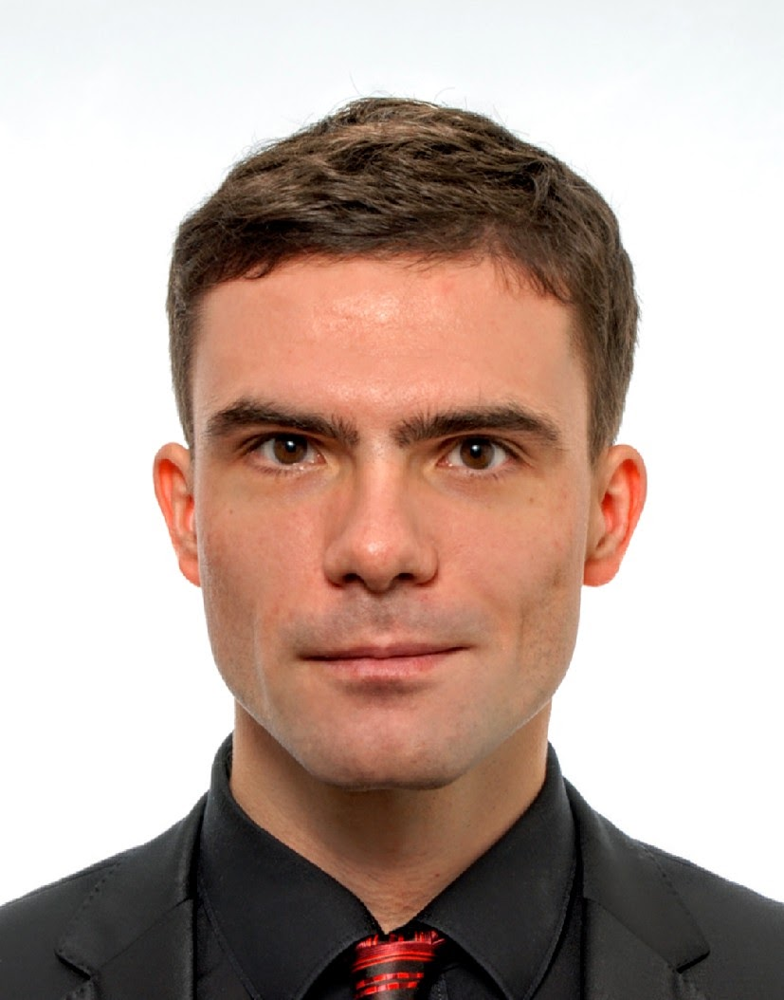
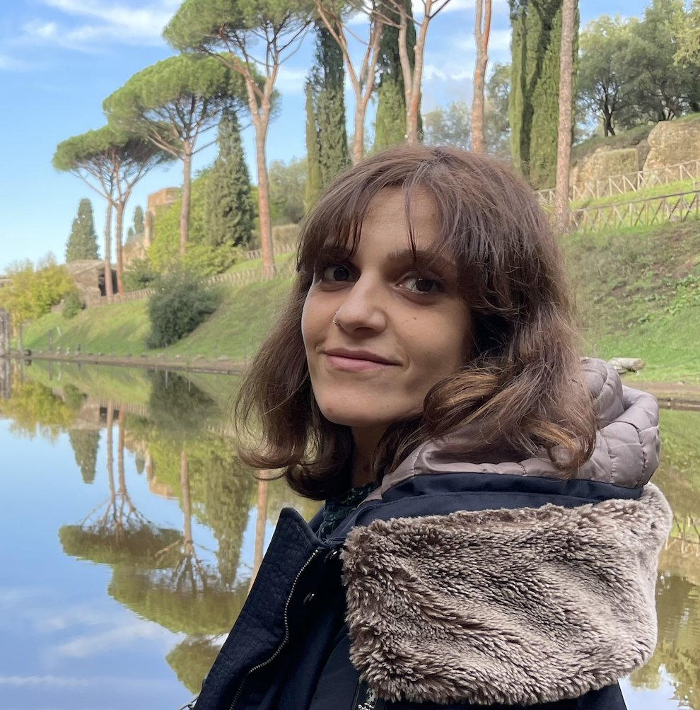
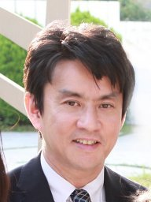
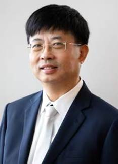

Ziwei Wang
Lancaster University, UK
z.wang82@lancaster.ac.ukPrimary contact
Lancaster University, UK
z.wang82@lancaster.ac.ukPrimary contact
South China University of Technology, China
luzhenyu@scut.edu.cn
Delft University of Technology, Netherlands
L.Peternel@tudelft.nlSeoul National University, Republic of Korea
amyhan@snu.ac.krKTH Royal Institute of Technology, Sweden
paragk@kth.seLancaster University, UK
y.he20@lancaster.ac.uk
Temple University Japan Campus, Japan
angela.faragasso@tuj.temple.edu
Tokyo University of Science, Japan
eiichi.yoshida@rs.tus.ac.jpKAIST, Republic of Korea
jhryu@kaist.ac.kr
Nanyang Technological University, Singapore
ecywen@ntu.edu.sg